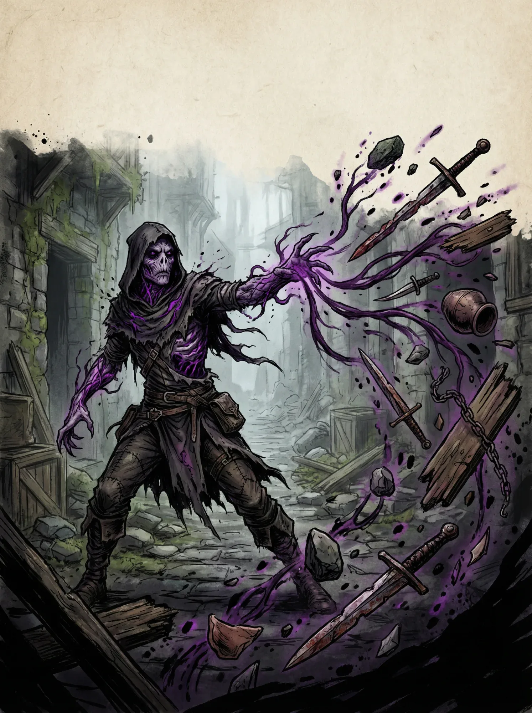

Corrompido
Marcados pelo éter. A corrupção não é doença — é transformação.
Eles carregam fragmentos do plano místico em seus corpos. Veias que brilham sutilmente, olhos que refletem cores impossíveis, sussurros constantes no limite da audição. São temidos por muitos, estudados por Teurgos, e caçados por alguns.
Perícias de Raça
Vontade ou Místico
Características de Raça
Ser Primordial
Você pode sentir a presença de qualquer misticidade no plano material em até 9m.
Receptáculo Natural
- Você pode conjurar duas magias de nível 1, de qualquer escola, sem um foco designado.
- Ao fazer isso, rola Vontade (CD 12), recebendo 1d4 de dano Psíquico em caso de falha.
- Escolha-as dentre as listas de magia nível 1.
Sussurros (1x/Descanso Curto)
- Você constantemente ouve fragmentos do plano místico e pode tentar estabelecer uma conversa com essas forças.
- Role um teste de Vontade (CD 15), se suceder você sustenta uma conversa de até 30 segundos com as vozes da sua cabeça.
- Se falhar, perde 1d4 de Éter.
Natureza Dúbia
- Você possui -2 em testes de interação social (exceto intimidação) com seres humanoides que desconfiem de você.
- Emana misticidade naturalmente, sendo facilmente percebido por magias que detectem isso.
Relações Sociais
Os corrompidos são universalmente vistos com desconfiança. Alguns corrompidos abraçam sua natureza, buscando mais poder. Outros lutam contra ela, tentando permanecer humanos. Muitos simplesmente tentam sobreviver em um mundo que não os quer.
A Corrupção
Corrompidos diferem no quanto as forças primordiais os transformaram. Equilibre os pontos para que sempre fiquem positivos ou iguais a 0. Você pode gastar um máximo de pontos de corrupção equivalente ao indicado na tabela abaixo. Corrupções Negativas são permanentes — pegou, e ela está permanentemente marcada no seu corpo. Contudo, corrupções positivas podem ser reorganizadas em um descanso longo.
| Nível | Máximo de Corrupção |
|---|---|
| 1 | 2 |
| 2 | 5 |
| 3 | 9 |
| 4 | 14 |
| 5 | 20 |
| Corrupção | Efeito | Custo |
|---|---|---|
| Sangue Morto | +5 Éter Máximo. +5 Stamina Máxima. | -1 |
| Carne Protetora | Agressores recebem 1d4 de dano Necrótico ao te acertarem. | -1 |
| Sede Etérica | Ao reduzir uma criatura a 0 de Saúde, recupere 1d4 de Éter ou Stamina. | -1 |
| Premonição Etérica | +1 Evasão. Seu dado da perícia Defender se torna um 2d6, ao invés de 1d10. | -2 |
| Reservatório de Éter | 1x/Descanso curto, concentrando-se por 5 min. Você restaura (Nível)d8 de Stamina e Éter. | -2 |
| Receptáculo Menor | Pode conjurar magias com 1 modulação grátis da respectiva escola da magia. Usos (1+Mod. Sabedoria)/Descanso Longo. | -2 |
| Chama de Éter | Ataques desarmados causam +1d6 de dano Necrótico. | -2 |
| Morto | Você não precisa respirar para sobreviver. Adicionalmente, ao ser reduzido a 0 de saúde, fica com 1 de saúde 1x/descanso longo. | -2 |
| Escola Visceral | Escolha uma escola de magia: magias dessa escola custam -2 éter e modulações custam -2 de éter (mín. 1). | -3 |
| Receptáculo Maior | Pode conjurar magias na intensidade Transbordante sem rolar Vontade. | -3 |
| Vigor Místico | Você recebe +5 Saúde por nível. | -3 |
| Asas do Monarca | Você desenvolve asas necróticas, feitas de uma combinação de éter e da sua pele necrosada. 1 ação, 3 m de voo. | -3 |
| Braço Necrosado | Alcance corpo a corpo +1,5 m. Adicionalmente, você tem vantagem na manobra de agarrar. | -3 |
| Sangue de Éter | Você pode gastar éter na proporção 2:1 para ganhar stamina. Adicionalmente, +10 Éter máximo. | -4 |
| Coringa | Você pode canalizar Disfarce Ilusório passivamente com duração infinita. Ao estar sob o efeito dessa magia você perde penalidades na perícia interação social oriundas da corrupção. | -5 |
| Adversidade | Efeito | Custo |
|---|---|---|
| Éter Chamativo | Qualquer criatura que tenha o mínimo domínio sobre o éter percebe sua presença em 30 m sem testes. | +1 |
| Fome Bizarra | Exige 2 Comidas para Descanso Longo, ou fica Desnutrido. | +1 |
| Pele Fraca | -1 Constituição. | +1 |
| Mente Fraca | -1 Sabedoria. | +1 |
| Passo Trêmulo | Movimento reduzido em -3 m. | +1 |
| Difusão de Éter | -10 Éter máximo. | +1 |
| Sono Perturbado | -1 Comodidade de Descanso. | +2 |
| Peso Morto | Em testes de jornada, não pode contribuir; além disso, aumenta a hostilidade da jornada em 5. | +2 |
| Sussurros Intensos | Você tem desvantagem em Percepção. | +2 |
| Metabolismo Anormal | Você não se beneficia de consumíveis como poções e elixires; no entanto, ainda consegue utilizar pergaminhos. | +3 |
| A Criatura | -2 em Interação Social (exceto Intimidação). Adicionalmente, itens são 50% mais caros para você; se comerciantes te perceberem com o resto do grupo, todo o grupo fica com o aumento do preço. | +3 |
| As Vozes | Ao rolar 1 natural em qualquer dado, perde 2d4+nível de éter. | +3 |
| Aberração Social | -5 em Interação Social (exceto Intimidação). Adicionalmente, você está sendo ativamente caçado por uma facção de Kharavel. | +4 |
| Pele Morta | Você é vulnerável a todos os tipos de dano não místicos, mas tem Armadura Específica (Místico, 5), exceto Força e Primordial. | +5 |
| Cicatrização Efêmera | Ao recuperar saúde de qualquer fonte, recupere apenas metade. | +5 |